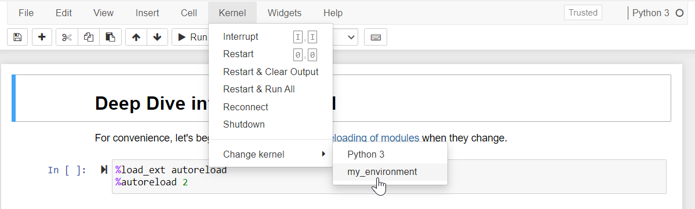

FAQ’s¶
Frequently asked questions.
Setting up environment¶
Q: jupyter notebook/lab cannot find qiskit_metal. Why is that?
A: If you are seeing: ModuleNotFoundError: No module named 'qiskit_metal' in jupyter notebook/lab, you are using a jupyter installation outside of your current environment and you therefore need to create a kernel that refers to the environment where you installed qiskit_metal. To do so, install and configure ipykernel.
conda:
conda activate <env_name>
conda install ipykernel
ipython kernel install --user --name=<any_name_for_kernel>
virtualenv:
source <env_name>/bin/activate # or .\<env_name>\Scripts\activate
python -m pip install ipykernel
ipython kernel install --user --name=<any_name_for_kernel>
You can now restart jupyter notebook/lab and switch to the newly created kernel using the menu Kernel>Change Kernel.
If jupyter notebook/lab is still unable to find qiskit_metal, you might need to re-install qiskit_metal after installing ipykernel.
You can completely prevent the ModuleNotFoundError by installing jupyter or jupyterlab inside the environment, instead of using a pre-existing installation.
Q: Why is the pip installation asking to install geopandas? Or why is it asking for a path to gdal-config?
A: If you have been directed here from a Qiskit Metal warning, or you are seeing: A GDAL API version must be specified. Provide a path to gdal-config using a GDAL_CONFIG environment variable or use a GDAL_VERSION environment variable. you are probably a Windows user, trying to install qiskit-metal thorugh pip on a brand new environment.
This is the result of a known limitation of the PyPI Windows wheels for gdal and fiona.
conda:
Conda has valid gdal and fiona packages. Simply run:
conda install geopandas
python -m pip install -e . (replace this line with the one you executed before the error)
python venv:
You will need to download and install the binary wheels from here.
After downloading the wheels, install gdal first, then fiona, then geopandas. Finally re-install qiskit-metal. Replace the wheel names in the example below with the names of the files you downloaded:
python -m pip install .\GDAL-3.2.3-cp38-cp38-win_amd64.whl
python -m pip install .\Fiona-1.8.19-cp38-cp38-win_amd64.whl
python -m pip install geopandas
python -m pip install -e . (replace this line with the one you executed before the error)
Q: Why is my installation complaining about missing ``geos_c.dll``?
A: Based on: this issue, this is a known bug with the shapely package <1.8. that should be fixed with a more recent shapely package. Meanwhile, you can use the shapely package from conda by installing it as conda install shapely before installing qiskit-metal, which installs the missing file as a dependency.
Q: Why do I have an invalid active developer path on MacOs?
A: If you are seeing: xcrun: error: invalid active developer path (/Library/Developer/CommandLineTools), missing xcrun at /Library/Developer/CommandLineTools/usr/bin/xcrun you may be missing the Command Line Tools.
The Command Line Tools package for XCode should be already installed.
If not, they can be installed with: xcode-select —install
Q: Why can’t qutip find my path?
A: qutip may have issues finding your path if using VSCode, resulting in a KeyError: 'physicalcpu'. If the error occurs, please add your PATH to VSCode’s settings as follows.
Windows:
Open Windows Command Prompt and type:
$Env:Path
Copy the resulting output. Example: "PATH": "/usr/local/bin:/usr/bin:/bin:/usr/sbin:/sbin"
Then open the applicable settings.json in your VS Code. (See how to open command palette here here). Search “settings” and click Open Workspace Settings (JSON)). Paste:
"terminal.integrated.env.windows": {
"PATH": "/usr/local/bin:/usr/bin:/bin:/usr/sbin:/sbin"
}
MacOs:
Open Terminal and type:
echo $PATH
Copy the resulting output. Example: "PATH": "/usr/local/bin:/usr/bin:/bin:/usr/sbin:/sbin"
Then open the applicable settings.json in your VS Code. (See how to open command palette here). Search “settings” and click Open Workspace Settings (JSON)). Paste:
"terminal.integrated.env.osx": {
"PATH": "/usr/local/bin:/usr/bin:/bin:/usr/sbin:/sbin"
}
Q: Why are “xcb” or “windows” found but not loaded?
A: it has been observed for pip installation on fresh conda environments that this error might show up: Could not load the Qt platform plugin "xcb" in "" even though it was found.
For xcb. Based on this source You might be able to resolve this error by installing the dependency with sudo apt-get install libxcb-xinerama0
For windows. This error intermittently shows in conda environments. It was found that the problem resolves if PySide2 is installed manually thorugh conda, with: conda install pyside2.
if the methods above do not work, consider utilizing an older version of python (and related dependencies)
Q: Why am I not able to start Jupyter Lab in the new environment?
A: Based on: this, install Jupyter lab by
conda install -c conda-forge jupyterlab
Then re-install the qiskit-metal package with pip, for example, if you are using the github local installation flow run the following:
python -m pip install --no-deps -e .
Q: Why am I seeing a critical error from qt about not controlling layer-backing?
A: If you are seeing: CRITICAL [_qt_message_handler]: …. WARNING: Layer-backing can not be explicitly controlled on 10.14 when built against the 10.14 SDK … you are likely running a MAC OS version that has trouble with the libraries. Based on information that is available online, this problem does not appear to have a solution. However, it does not seem like this error affects Qiskit Metal’s functionality. If you find problem with this, you might want to try using an older version of the dependency packages, beginning with lowering your python version to 3.7.x.
Q: Why am I seeing a Shiboken2 import error?
A: If you are seeing ‘_int_pyside_extension’ is not defined or Unable to import Shiboken2, you must have used at some point in the past an older verions of PySide2, and you have now installed a more recent versio of PySide2, which is incompatible with the previous method calls. This problem can appear also if you are creating a new environments because the old library might be in the shared libraries. The problem is likely to occur if you forget to use the –no-deps installation flag. To resolve this problem, you need to forcefully uninstall or delete any trace of the old package. You can use any method you feel comfortable with (manual or automated). Some conda users have had succeeded by using a simple uninstall/install sequence: conda uninstall pyside2, conda install -c conda-forge pyside2
Q: Why is my MAC installation flagging a bad “convert”?
A: MAC OS Catalina requires a 64 bit convert binary file. You might have the 32 bit one. Try reinstalling imagemagick. Note that you might need to force the install using:
brew link --overwrite imagemagick
Getting started with GUI developement¶
Q: Is there a PySide2 tutorial?
A: Yes! This article from realpython.com contains a nice tutorial to help you get started!
Q: Are there any pitfalls I may run into?
A: Like anything else, yes. This article from enki-editor.org describes some common pitfalls.
Q: Is there a video tutorial for starting QT Designer?
A: Yes there is, check it out on youtube here.
Q: I’m having trouble with slots and signals. Can you help?
A: Sure. There are a few decent overviews. A good place to start are these two:
Documentation¶
Q: I am seeing a lot of warnings when I build the docs. How do I resolve them?
A: There is no need to build the docs locally unless you really want to. The docs can be accessed without building them yourself by navigating to https://qiskit-community.github.io/qiskit-metal/.
If you chose to build the docs yourself, some users may see a list of warnings when building the docs. Warnings about matplotlib text role can be safely ignored.
You can resolve other warnings by deleting the following directories and rebuilding:
docs/_build
docs/build
docs/stubs
Q: How do I download a tutorial?
A: Navigate to the tutorial you want to download in the documentation. Once you’ve done that follow these steps:
At the top of the page there is a notice informing you where the tutorial was generated from with a link. Click that link.
Near the top of the notebook, you see a button that says Raw. Right click Raw, select Save link as to download the .ipynb file.
Connecting to 3rd party software¶
Q: I’m having trouble connecting to Ansys after running connect_ansys().
A: First check to see if a project and design are already open and active in Ansys.
Activate an Ansys design by double clicking on it in the Project Manager panel.
If the error persists, there may be one or more hidden Ansys windows in the background. Close them via the task manager and try again.
Why am I getting a win32com error?
If you have run a EnsureDispatch command as part of qiskit-metal or independently in your conda environment, you might later encounter errors such as AttributeError: module 'win32com.xxx' has no attribute 'CLSIDToClassMap'.
To resolve this, you will need to delete the temporary module python files that EnsureDispach creates as part of COM object method retrieval.
To do so, delete the entire folder gen_py or just the file in it that corresponds to your error message.
Note that this folder might show up in different paths, depending on the OS and setup. You should in general be able to find it at this path: $env:LOCALAPPDATATempgen_py